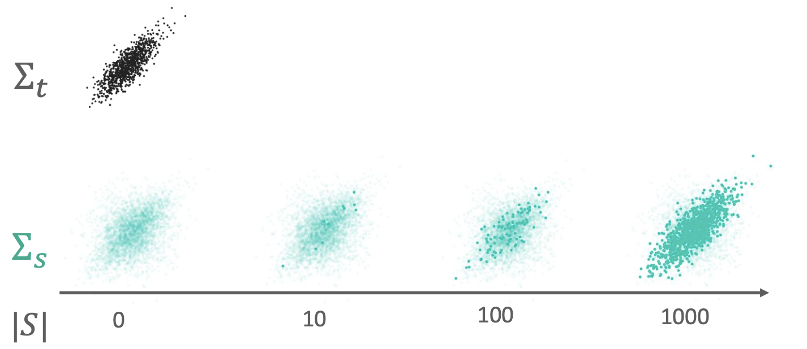

Setup
- Real training set \((X_t, y_t)\) and synthetic augmentation set \((X_s, y_s)\).
- Train on the union, evaluate on test distribution matching real training.
- Selection is done class by class from a generated pool.
Selection objective
In practice, compute features for real and synthetic samples (CLIP is a strong default). Then select a subset of synthetic samples whose sample covariance best matches the real sample covariance.
# Pseudocode (per class)
Input: real features R (nt x p), synthetic pool features P (N x p), target size ns
Fit PCA on R, keep d dims (e.g., d = 32)
Project: R_d, P_d
Compute target covariance Ct = cov(R_d)
S = empty
while |S| < ns:
pick x in pool that minimizes || cov(S ∪ {x}) - Ct ||_F
add x to S
Return selected indices SReplace feature extractor, distance, or greedy step with your preferred implementation.
covariance matching gradually selects data matching the sample covariance matrix of the real samples.